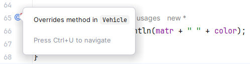
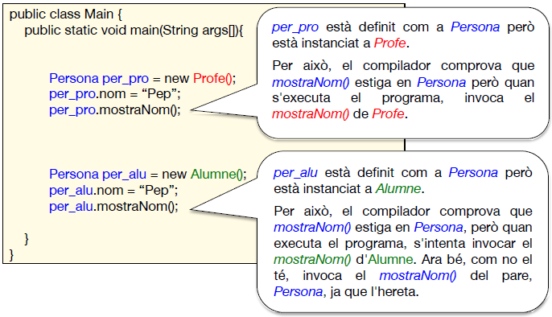

UD9. Programació Orientada a Objectes. Classes amb mètodes
1. Introducció
Ja diguérem que la POO (Programació Orientada a Objectes) és una metodologia que basa l'estructura dels programes en objectes. I que els objectes es classifiquen en classes. I que de cada classe ens poden interessar determinades característiques i operacions per a descriure cadascun dels seus objectes.
Per tant, per a descriure una classe necessitem:
- Atributs o característiques (Vist al tema anterior)
- Mètodes o operacions (Ho vorem en este tema)
Exemple: la classe Casa
- Atributs: Quantitat de pisos, alçada total en metres, color de la façana, quantitat de finestres, quantitat de portes, carrer i número on està ubicada...
- Mètodes: Contruir-la, destruir-la, pintar la façana, obrir una nova finestra, pintar habitacions...
Evidentment, a partir dels requeriments de l'aplicació, definirem les classes amb els seus atributs i mètodes.
No ve mal recordar els conceptes de la POO

2. Estructura d'un programa OO
Exemple de l'estructura d'un programa OO
| Java | |
|---|---|
Exercici 1. Introductoris
Per vore si t'han quedat clars els conceptes d'objecte, classe, atributs, mètodes i estat, pensa en els distints objectes que solen aparéixer en un programa de marcianets. Quines classes d'objectes apareixen? Apareixen molts objectes de la mateixa classe? Pensa en alguns atributs i alguns mètodes per a cada classe, així com l'estat que podria tindre algun objecte.
Exercici 2
Al llarg del tema farem exercicis sobre un concessionari per a tindre un control dels vehicles que ven. De moment crea una aplicació anomenada Concessionari. Allí crea la classe Cotxe, en un fitxer diferent al de la classe principal on està el main. De moment crea la classe sense atributs ni mètodes (ja anirem ampliant-la conforme anem veient més temari).
3. Definició d'una classe
3.1. Sintaxi
3.2. Modes d'accés de la classe
Els modes d'accés de la classe poden ser una combinació d'entre les següents:
- public / (res): s'utilitza per a indicar des d'on es pot utilitzar.
- Si no es posa cap mode d'accès, eixa classe només podrà ser accedida des de fitxers del mateix paquet on està la classe.
- Si es posa public la classe podrà ser usada des de qualsevol lloc de l'aplicació. En un fitxer .java només pot haver una classe pública i ha de tindre el mateix nom que el fitxer (sense l'extensió, clar).
- abstract / final / (res): s'utilitza per a l'herència de classes (ja ho vorem).
- Si una classe és abstract no podrem crear objectes d'eixa classe, sinó que s'hauran de definir classes filles d'eixa classe.
- Si una classe és final no es podran crear subclasses d'ella.
3.3. Atributs
Com ja hem vist al tema anterior, són les variables membre que caracteritzen l'objecte. El seu valor en un moment donat indica l'estat de l'objecte.
Esta és la sintaxi de Java per a definir un atribut:
<nivellD'Accés> <tipusDeDades> nomAtribut;
3.3.1. Tipus de dades dels atributs
Recordem que el tipus de dades dels atributs pot ser qualsevol: enter, real, lògic, caràcter, cadena, vector, matriu... o una altra classe (classes niuades).
3.3.2. Nivell d'accés dels atributs (i dels mètodes)
Els atributs (i mètodes) sempre són accessibles des de la classe on estan definits però podem fer que també puguen ser accessibles des d'altres llocs. Per a fer això, davant de la definició dels atributs posarem un modificador que ens indicarà el nivell d'accés que té cada atribut (o mètode):

Consell
Els atributs solen ser privats, i la classe que els inclou, si cal, donarà accés a ells mitjançant els mètodes (generalment públics) de lectura i modificació d'eixos atributs. És el que es coneix com a encapsulament (que vorem en detall més endavant).
Per si no ha quedat clar, a la següent taula tenimi resumits els diferents nivells d'accés dels atributs i mètodes:

Exercici 3
Posa els següents atributs a la classe Cotxe: numBastidor, matricula, marca, model, color i preu. També l'atribut privat revisions (vector de 5 booleans).
3.4. Mètodes
Són les operacions (procediments o funcions) que s'apliquen sobre els objectes. Entre altres coses, permeten canviar el seu estat (valor dels atributs), fer operacions sobre el seu estat, consultes... però tenen un funcionament un poc diferent ja que actuen sobre un objecte. Veiem com invocaríem un mètode i com es defineix:
3.4.1. Ús dels mètodes
Després de crear un objecte (en el main o on siga), si volem fer alguna cosa sobre ell, "li enviarem un missatge": indicarem el nom de l'objecte, un punt, i el missatge (nom del mètode amb els paràmetres). Per exemple, si tenim un objecte de la classe Cercle (on tindrà el radi, etc), podríem fer:
| Java | |
|---|---|
- Missatge a c1: "c1, dona'm la teua àrea".
- Missatge a c1: "c1, incrementa el teu radi en 3".
3.4.2. Definició dels mètodes
- El this és una referència a cercle1 (l'objecte de la crida). Per tant, usarem el this per a accedir als atributs, encara que és opcional.
3.4.3. Modificador static dels mètodes
Recordem que sempre posàvem la paraula static en la declaració de funcions i procediments. Però observem que ara no l'estem posant.
Quan posarem el modificador static en un mètode?
Mètode sense static: Quan volem que s'invoque amb el nom de l'objecte:
| Java | |
|---|---|
- Posem el nom de l'objecte davant del mètode.
Dins del mètode podrem accedir als atributs de l'objecte (amb this):
| Java | |
|---|---|
- Si li posàrem static int diametre() ens donaria error de compilació (ja que usa el this): non-static variable cannot be referenced from a static context
Mètode amb static: Quan volem que s'invoquen sense cap objecte:
- No posem res davant del mètode.
- Si el mètode està definit en altra classe, posarem el nom d'eixa classe.
En estos casos no tindrà sentit que el mètode accedisca els atributs de la classe ja que no estem treballant en cap objecte.
- Si en la funció usàrem this ens donaria error de compilació ja que hem posat static.
Exercici 4. Mètodes
Modifica la classe Cotxe que tens creada: afegix-li els següents mètodes:
Exercici 5
En el main, crea 2 cotxes (cotxe1 i cotxe2) i fes les següents operacions sobre ells usant els mètodes corresponents:
- Demana una matrícula per teclat i posa-li-la a cotxe1. Ídem al cotxe2.
- Pinta el cotxe1 de groc i el cotxe2 de lila.
- Passa la revisió del 1r any de cotxe1, i la del 2n any dels 2 cotxes. Comprova que no podries fer-ho sense el mètode, ja que l'atribut revisions és privat.
- Evita que done error si intentem passar un número de revisió inexistent (fora de les dimensions del vector) però no ho faces en el main, sinó en el mètode corresponent.
- Mostra les dades del cotxe que ha passat més revisions.
3.5. Mètodes constructors
Definició
Un constructor és un mètode especial que s'executa automàticament quan es crea un objecte (quan li assignem memòria amb el new).
Utilitat
Serveix, principalment, per a donar valors inicials als atributs de l'objecte.
Exemple
| Java | |
|---|---|
- Exemple de constructor amb paràmetres.
- Havíem dit que l'ús de this és opcional, però no en este cas, ja que hi hauria conflicte de noms amb els paràmetres.
- Exemple de contructor sense paràmetres.
| Java | |
|---|---|
- Invoquem el constructor de 2 paràmetres.
- Invoquem el constructor sense paràmetres.
3.5.1. Propietats dels constructors
- El nom del constructor sempre és el nom de la classe.
- Rep zero o més paràmetres d'entrada i els utilitza per a inicialitzar els valors dels atributs de l'objecte.
- No té paràmetres de sortida (ni void ni cap altre tipus).
- No podem invocar els constructors directament des del programa principal. S'invocaran automàticament quan creem un objecte amb new.
- El constructor pot estar sobrecarregat: una classe pot tindre més d'un constructor (sempre amb el mateix nom) però amb diferent llista de paràmetres. En eixe cas, des d'un constructor de la classe es pot cridar a un altre constructor de la mateixa classe (sempre en la primera línia del constructor) amb this;
| Java | |
|---|---|
-
Estem cridant a l'altre constructor. Només podem fer-ho en la primera instrucció del constructor.
-
Constructor per defecte. Si no hem especificat cap constructor, es crea automàticament un constructor sense paràmetres. No es veu, però està:
- Però compte! Si creem un constructor amb paràmetres, el constructor per defecte sense paràmetres deixa d'existir.
Exercici 6
Crea un constructor de la classe Cotxe que reba com a paràmetres el número de bastidor, la matrícula, marca, model, color i preu. El constructor deu inicialitzar l'estat de l'objecte amb estos. El vector de revisions es posarà tot a fals. Voràs que ara dona error la creació dels cotxes anteriors que usaven el constructor per defecte. Què ha passat? Passa a l'exercici següent per a solucionar-ho.
Exercici 7
Totes les classes tenen un constructor per defecte (sense paràmetres) però "desapareix" si creem altre constructor. Per tant, crea un constructor sense paràmetres que no faça res. Comprova que ara ja no et dona error la creació dels cotxes que usaven el constructor sense paràmetres.
Exercici 8
Crea un altre constructor de la classe Cotxe que reba com a paràmetre el número de bastidor, la marca i el model. No inicialitzarà cap atribut, sinó que cridarà a l'altre constructor per a que ho faça ell, amb l'ús de this(paràmetres).
Exercici 9
Crea altre constructor a la classe Cotxe, que reba només la matrícula. El constructor haurà de preguntar per pantalla els valors del número de bastidor, marca i model. Igual que l'exercici anterior, intenta cridar al primer constructor amb this per a que s'encarregue dels seus atributs. Per què no et deixa? Perquè la crida a un altre constructor ha de ser la primera instrucció del constructor. Per tant, no hi haurà més remei que repetir el codi de la inicialització dels atributs.
3.5.2. Crides als constructors (instanciació d'objectes)
Sempre havíem creat els objectes amb el new. Estàvem cridant al constructor per defecte (el que no té paràmetres).
NomClasse nomObjecte = new nomClasse(); {.center}
Com ara ens hem creat els nostres constructors, podem usar-los posant els corresponents paràmetres al new:

És a dir, una instrucció d'instanciació d'un objecte (crear-lo, amb el new) fa açò:
- Reserva memòria per a l'objecte.
- Crida al constructor corresponent, qui sol omplir dades en eixa memòria.
- Assigna a l'objecte una referència (adreça) a la memòria reservada.
Nota
L'String no és un tipus sinó una classe (per això es posa en majúscula, a diferència de int, char, float...) Per tant, si volem una variable de tipus cadena, el que hauríem de fer és declarar un objecte de la classe String.
String nom = new String("Pep");
Ara bé, com sabem, hi ha una forma abreujada de fer-ho per als objectes de la classe String:
String nom = "Pep";
Exercici 10. Crides als constructors
Crea els objectes cotxe3, cotxe4 i cotxe5, amb valors qualsevol, usant els 3 constructors de cotxes que has definit.
Exercici 11
Demana per teclat les dades d'un cotxe (bastidor, marca, model, color i preu). Crea l'objecte cotxe6 passant-li com a paràmetres al constructor les dades que s'han arreplegat per teclat. Nota: passa una cadena buida per a la matrícula.
Exercici 12
Intenta crear l'objecte cotxe7 passant-li al constructor només el preu. Per què no et deixa?
Exercici 13
Crea el vector cotxesAparador de 5 cotxes. Inicialitza'ls tots usant el constructor al qual només se li passa la matrícula. Les matrícules aniran de l'1 al 5.
3.6. Destructors
Igual que es creen els objectes (amb new), com que ocupen espai en memòria, cal alliberar eixe espai quan ja no els necessitem.
En molts llenguatges de programació, com C++, es poden definir els destructors per a que s'executen automàticament quan ja no es faça servir l'objecte. En Java, no es poden definir els destructors. Java té un sistema de recollida d'escombraries, el Garbage Collector que s'encarrega de recollir els objectes que ja no s'utilitzen. Per tant, el programador no ha de preocupar-se de l'alliberament de memòria.
Exemples d'alliberament de memòria:
- Si fem un 2n new a un objecte, el primer ja no es pot accedir i el Garbage Collector el recollirà.
- En eixir d'una funció on s'ha creat un objecte, eixe objecte ja no es pot accedir i el Garbage Collector el recollirà.
4. Abstracció
Els llenguatges de programació OO han de complir unes propietats bàsiques:

En este apartat veurem l'abstracció:
Definició
Capacitat per a aïllar un conjunt d'informació i/o comportaments relacionats.
Avantatges
- Reduix la complexitat dels programes (dividix i guanyaràs)
- Fomenta la reutilització del codi.
Mecanismes d'abstracció
L'abtracció en la POO és la capacitat per a aïllar en una classe els atributs i mètodes comuns a un determinat conjunt d'objectes. Però l'abstracció no la trobem únicament en les classes:
| MECANISMES D'ABSTRACCIÓ | CARACTERÍSTIQUES |
|---|---|
| Funcions | Conjunt d'instruccions que es pot parametritzar i ser invocat en qualsevol moment. |
| Mòduls | Conjunt de funcions que guarden alguna relació. Són fitxers, paquets, llibreries... |
| Classes | Conjunt de dades i funcions que descriuen una sèrie d'objectes. Incorpora tècniques com l'herència, polimorfisme... |
5. Encapsulament
5.1. Introducció
Els usuaris dels objectes (main, per exemple) poden accedir als atributs directament, però no és aconsellable.
En compte d'això, els usuaris dels objectes haurien d'accedir als atributs mitjançant una interfície (enllaç): el conjunt de noms dels mètodes públics de la classe. Estos mètodes faran d'intermediaris entre l'usuari i l'objecte.
Així, si el programador vol canviar la forma d'accedir a un atribut, no ha de canviar tot el programa sinó solament els mètodes de la classe que accedeixen a eixe atribut.
L'encapsulament és la propietat que tenen els objectes d'ocultar els seus atributs a altres parts del programa.
Com ho farem?
- Atributs: privats.
- Mètodes: públics (o protegits, si cal).
És a dir: l'estructira interna d'un objecte normalment està oculta als usuaris de l'objecte, i l'única forma que té l'usuari d'un objecte de comunicar-se amb ell és a través dels mètodes públics de l'objecte. El conjunt de mètodes públics d'un objecte s'anomena interfície de l'objecte.
Exemple
- Des de fora no podem accedir directament als atributs privats de la classe Casa. Per a això, la classe Casa proporciona els mètodes públics pinta, creaFinestres i llevaFinestres.
| Java | |
|---|---|
- Aques ús de l'atribut qFinestres donaria error de compilació ja que és privat. Per a accedir a eixe atribut, s'ha de fer a través dels mètodes públics de la classe Casa.
Per què usar encapsulament?
Un dels motius és per a evitar errors posteriors. Si donàrem permís per a accedir directament als atributs, podria donar-se el cas que, per exemple, llevàrem més finestres de les que té la casa.
Per tant, són els mètodes dels objectes qui controlen els errors. Podríem dir que els mètodes són "professionals" en crear finestres, llevar-les... Així, els usuaris de l'objecte no s'han de preocupar de comprovar si hi ha suficients finestres o no abans de tancar-les.
5.2. Getters i setters
Com hem vist, convé que els atributs siguen privats. Per tant, per cada atribut necessitem 2 mètodes: un per a modificar el seu valor i un altre per a consultar-lo.
Els mètodes destinats a donar un valor a un atribut s'anomenen setters, mentre que els destinats a consultar el valor de l'atribut s'anomenen getters.
Per simplificar la tasca dels programadors, hi ha una convenció pel que fa als noms dels setters i getters: sempre els anomenarem amb les lletres get o set més el nom de l'atribut (amb la primera lletra en majúscula). Per exemple, per a l'atribut edat de la classe Alumne tindrem els mètodes setEdat i getEdat:
| Java | |
|---|---|
- Al setter de l'atribut edat li passem un paràmetre e que serà el nou valor de l'atribut.
- El getter de l'atribut edat no necessita cap paràmetre i retorna el valor de l'atribut.
| Java | |
|---|---|
- Invoquem al setter d'edat de l'objecte a1.
- Invoquem al getter d'edat de l'objecte a1.
Exercici 14. Encapsulament
Encapsula els atributs color i preu de la classe Cotxe: posa'ls com a privats i crea els setters i getters corresponents. Modifica el programa principal per a que use els mètodes setters i getters per a accedir als atributs.
5.2.1. Construcció automàtica de getters i setters
Per generar getters i setters de forma automàtica en IntelliJ IDEA, segueix aquests passos:
- Obre la classe on vols afegir els getters i setters.
- Situa el cursor dins de la classe (a qualsevol lloc).
- Accedeix al menú de generació:
- Mètode 1: Clic dret → Generate (o bé
Alt + Inserta Windows/Linux,Cmd + Na macOS). - Mètode 2: Menú superior → Code → Generate.
- Mètode 1: Clic dret → Generate (o bé
- Selecciona "Getter and Setter". Es mostrarà un diàleg amb tots els atributs de la classe.
- Tria els atributs per als quals vols generar mètodes:
Exercici 15. Encapsulament automàtic
Encapsula els atributs numBastidor, matrícula, marca i model de la classe Cotxe. Fes-ho amb la inserció automàtica que ofereix el teu IDE.
6. Herència
L'herència és un dels principals avantatges de la POO. Ens permet establir una jerarquia de classes. Podrem definir classes específiques a partir d'una altra més general, afegint-hi atributs i mètodes nous o sobreescriure els ja existents.
flowchart TD
A[Animal] --> B[Mamífer]
A --> C[Rèptil]
A --> D[Au]
B --> E[Caní]
B --> F[Felí]
E --> G[Gos]
E --> H[Llop]
F --> I[Gat]La classe més general (Animal) es diu classe pare o superclasse. Les classes més específiques (Mamífer, Rèptil, Au) es diuen classes filles o subclasses.
6.1. Propietats de l'herència
- La subclasse hereta els atributs i mètodes de la superclasse.
- La subclasse pot afegir nous atributs i mètodes.
- La subclasse pot redefinir mètodes de la superclasse (per exemple, un mateix mètode pot tindre una implementació diferent en la superclasse i en la subclasse).
6.2. Avantatges
- Reusabilitat o reutilització del codi: una subclasse pot aprofitar el codi d'una superclasse ja existent, modificant-lo mínimament per a que s'adapte a les seues necessitats.
- Els canvis en una classe general (nous mètodes, atributs...) es propaguen a les seues subclasses.
Exemples
L'herència és la forma natural de definir objectes en la vida real. Per exemple, podríem definir un xalet com una casa però amb jardí. Per tant, un xalet és un tipus de casa: xalet serà una classe filla de casa
flowchart TD
A[Casa] --> B[Xalet]
A --> C[Pis]
A --> D[Adossat]Vegem les propietats de l'herència en este exemple de xalet:
- El xalet (com a casa que és) també tindrà els atributs de la casa (portes, finestres, color...) i els mètodes de la casa (contruir, printar...).
- El xalet tindrà nous atributs (color de la tanca, jardí, metres de la piscina, quantitat d'arbres...) i nous mètodes (plantar un arbre, netejar piscina...).
- A més, amb la propietat de polimorfisme (que veurem més endavant), podríem redefinir mètodes de la casa en el xalet (per exemple, el mètode printar, a més de fer el que feia, que pinte també la tanca).
IMPLEMENTACIÓ
| Superclasse | |
|---|---|
| Subclasse | |
|---|---|
- L'herència s'indica amb la paraula extends.
- El mètode area de la subclasse Xalet sobreescriu el mètode area de la superclasse Casa.
- Amb super. podem accedir als mètodes de la superclasse.
- Un xalet pot usar tant els seus atributs com els heretats de la casa.
- Un xalet pot usar tant els seus mètodes com els heretats de la casa.
- El xalet1 invocarà el mètode area() de Xalet.
- La casa1 invocarà el mètode area() de Casa.
6.3. Què és el @Override?
Quan estem sobreescrivint un mètode, alguns IDEs ens avisen amb un missatge semblant al següent:

No és un error. Simplement ens avisa que el mètode mostrar() de la classe Cotxe ja l'hem definit en la classe mare Vehicle i, per tant, l'oculta. És a dir: abans de sobreescriure el mètode, si un objecte de la classe Cotxe cridava a mostrar() s'executa el de la classe pare Vehicle, però ara ja no podrem invocar-lo en objectes de la classe Cotxe ja que estarem invocant al mostrar() de la classe Cotxe.
Si fem clic en els avisos se'ns recomana escriure @Override abans del mètode que estem sobreescribint.
El funcionament serà el mateix però té distintes utilitats:
- Indica al programador que eixe mètode "substitueix" l'altre en el fill (que "oculta" el mètode del pare).
- Si volem sobreescriure un mètode i posem @Override però ens hem equivocat amb el nom del mètode en alguna lletra, ens avisarà, ja que no hi ha cap mètode a sobreescriure.
- Si més endavant eliminàrem el mètode mostrar() de la classe pare o li canviàrem el nom, el compilador avisaria, ja que el mètode corresponent en la classe filla deixaria d'estar sobreescrit.
6.4. El constructor de la subclasse
Observem el funcionament dels constructors de la subclasse amb el mateix exemeple del Xalet:
Exemple
| Subclasse | |
|---|---|
- Crida al constructor de la superclasse (sempre en la 1a instrucció). Si no estiguera eixa crida, estaria super() per defecte. Per tant, donaria error perquè no existeix el constructor de la superclasse sense paràmetres.
6.5. Pasos a fer per a crear una subclasse
Quan definim una subclasse no hem de copiar atributs i mètodes ja que podrem usar-los encara que no estiguen físicament. Només farem el següent:
Exercici 16. Herència
Crea, en un altre fitxer, la classe Cotxe2aMa.
- Fes que siga subclasse de Cotxe.
- Posa en Cotxe2aMa un atribut nou, kms (enter), i encapsula'l (fes-lo privat i crea els seus mètodes getter i setter).
- Sobreescriu mostrarDades() perquè també mostre els kms. Però no faces un copiar i pegar del codi de Cotxe sinó que crida al mètode mostrarDades() de la superclasse i després mostra els kms.
- Comprova que si en la classe Cotxe eliminares el constructor sense paràmetres, tindries un error de compilació en la classe Cotxe2aMa. Pensa per què.
- Fes un contructor de la classe Cotxe2aMa que agafe com a paràmetres el bastidor, marca, model, matrícula i kms. Este constructor haurà de cridar al constructor adequat de la superclasse amb els paràmetres corresponents i inicialitzar la resta d'atributs.
Exercici 17
En el main fes el següent:
- Crea l'objecte cotxeAntic de la classe Cotxe2aMa passant-li al constructor els paràmetres necessaris (inventa'ls).
- Crea l'objecte cotxeNou de la classe Cotxe. Mostra per pantalla les dades dels dos cotxes amb crides a mostrarDades(). Comprova que no trauen la mateixa informació. Podríem invocar el mostrarDades() de la classe Cotxe amb l'objecte cotxeAntic?
Exemple resum de l'us de this, this (...) super. i super(...)
- Accés a un altre constructor de la mateixa classe.
- Accés al constructor de la superclasse.
- Accés a l'atribut de la mateixa classe.
- Accés a l'atribut de la superclasse.
- Accés a un mètode de la mateixa classe.
- Accés a un mètode de la superclasse.
CONSELL: usa sempre this. Quan no siga possible, usa super.
Exercici 18. Ús de this i super
Crea un projecte nou i escriu en ell estes classes:
Què creus que mostraria el mètode proves()? Per a comprovar-lo, des del main, crea un objecte de la classe Cotxe, dona-li valor a la matrícula, any i portes, i fes una crida al mètode proves() d'eixe objecte. Digues si és vertader o fals:
- Si no hi ha conflicte ---> Per accedir al pare puc posar this, super o res.
- Si hi ha conflicte ---> this agafa el fill; super agafa el pare; res agafa el fill.
- Si una variable està en pare i fill, cadascuna pot guardar un valor diferent.
6.6. Mètodes abstractes i classes abstractes
En una jerarquia de classes podem fer que una classe tinga algun mètode declarat però no implementat. Per exemple:
| Java | |
|---|---|
- Mètode abstracte: definit però no implementat. Per tant, no podrem crear objectes de la classe Figura (per això és també abstracta), sinó que només podrem crear objectes d'alguna classe filla de Figura que sí que implemente eixe mètode abstracte.
Ara bé, si en la classe Cercle no volguérem implementar el mètode area(), hauríem de declarar també la classe Cercle com a abstracta. En eixe cas, no podríem crear objectes de la classe Cercle sinó que hauríem de crear objectes d'una classe filla de Cercle que sí que implemente el mètode area().
Per tant, tenim que:
- Mètode abstracte: mètode declarat però no implementat. Les classes que hereten d'una classe amb mètodes abstractes han de sobreescriure eixos mètodes.
- Classe abstracta: classe que conté almenys un mètode abstracte. No es poden crear objectes d'una classe abstracta (sinó que s'han de crear objectes de les seues classes filles que sí que implementen eixos mètodes).
Exercici 19. Mètodes i classe abstractes
Practica amb els mètodes i classes abstractes amb l'exemple anterior. Concretament, segueix els passos següents:
- Crea la classe Figura amb el mètode area() com està en els apunts però sense posar el abstract (ni en el mètode ni en la classe).
- Et donarà error en el mètode. Llig l'error i intenta comprendre el per què. Caldrà declarar el mètode com a abstracte.
- Et donarà error la classe. Llig l'error i intenta comprendre el per què. Caldrà declarar la classe com a abstracta.
- En el main intenta crear un objecte de la classe Figura. No et deixarà. Per què?
- Crea la classe Cercle de l'enunciat però sense posar el mètode area(). Et donarà un error. Llig i intenta entendre el per què. Implementa els mètodes abstractes del pare.
- Posa el cos que cal al mètode area() de Cercle.
- Prova a crear un objecte de Cercle en el main. Ara sí que et deixarà, ja que la classe no és abstracta i ja s'ha implementat el mètode abstracte.
7. Polimorfisme
Acabem de vore que pot haver diferents mètodes amb el mateix nom però que fan coses diferents. Això és el polimorfisme.
Una paraula polisèmica és aquella que té distints significats, segons el context. Igual passa amb el polimorfisme en la POO: un nom de mètode pot tindre distintes implementacions i s'invocarà a un o altre segons el context.
Tipus de polimorfisme:
- Sobrecàrrega basada en els paràmetres: mètodes amb el mateix nom en una mateixa classe però amb diferents paràmetres. S'executarà un mètode o altre depenent dels paràmetres.
- Sobreescriptura: mètodes amb el mateix nom i mateixos paràmetres en classes distintes però amb relacions d'herència entre ells. S'executarà un mètode o altre depenent de la classe de l'objecte que fa la crida.
- Sobrecàrrega basada en l'àmbit: mètodes amb el mateix nom en diferents classes sense relacions d'herència entre ells. S'executarà un mètode o altre depenent de la classe de l'objecte que fa la crida.
- Variables polimòrfiques: És el prolimorfisme pròpiament dit. Ens permet que un objecte definit sobre una superclasse puga ser instanciat en qualsevol de les seues subclasses.
Nota
Alguns autors solen diferenciar sobrecàrrrega de polimorfisme però nosaltres vorem la sobrecàrrega com un tipus de polimorfisme.
Veiem detalladament els 4 tipus de polimorfisme amb l'ajuda d'exemples.
7.1. Sobrecàrrega basada en els paràmetres
En una classe poden haver distints mètodes amb el mateix nom, sempre que tinguen distints paràmetres d'entrada (no importa el paràmetre d'eixida).
En temps de compilació ja se sap el mètode que s'invocarà en cada crida: segons els paràmetres.
Exemples
Podem tindre en una classe distints mètodes per a mostrar dades per pantalla, una per a cada tipus de paràmetre.
| Java | |
|---|---|
- Este mètode s'executarà quan invoquem imprimir amb un enter com a paràmetre.
- Este mètode s'executarà quan invoquem imprimir amb un vector d'enters com a paràmetre.
Una classe pot tindre distints constructors (amb el mateix nom, clar), sempre que tinguen distints paràmetres.
| Java | |
|---|---|
- S'executarà quan creem un objecte de la classe Casa amb 3 paràmetres: 2 enters i una cadena. Casa casa1 = new Casa(2, 4, "blanc");
- S'executarà quan creem un objecte de la classe Casa sense paràmetres. Casa casa2 = new Casa();
7.2. Sobreescriptura
És el tipus de polimorfisme que hem vist en l'herència: mètodes amb el mateix nom i mateixos paràmetres en classes distintes però amb relacions d'herència entre elles. Se sol dir que la sobreescritura és el polimorfisme pròpiament dit.
Quan s'invoque un mètode sobreescrit s'executarà el de la casse de l'objecte que ha fet la crida:
Recordem que, si una subclasse sobreescriu un mètode però en eixa subclasse volem invocar la implementació de la superclasse, ho farem amb super.
7.3. Sobrecàrrega basada en l'àmbit
Mètodes amb el mateix nom en diferents classes sense relacions d'herència entre ells.
El mètode mostrarNom() està sobrecarregat en base a l'àmbit en les classe Profe, Conserge i Cotxe. El mostrarNom() de Profe i el de Conserge no tenen res a vore, ja que no estan sobreescrint el mètode, ja que no existeix en la classe pare.
No hi ha conflicte. En cadascuna de les crides anteriors cridarà al mostrarNom() corresponent de la classe de cada objecte.
En temps de compilació ja se sap quin mètode s'invocarà. Per això donarà error de compilació la instrucció per.mostrarNom(), ja que la classe Persona no té eixe mètode.
7.4. Variables polimòrfiques
Donada esta jerarquia de classes, si tinc un objecte definit com a Persona, puc instanciar-lo a un objecte d'eixa classe... o a qualsevol descendent d'eixa classe.
flowchart TD
A[Persona] --> B[Alumne]
A --> C[Professor]
C --> D[Interí]
C --> E[Definitiu]Per exemple
| Java | |
|---|---|
- En una persona puc posar un alumne, un profe... (qualsevol descendent)
En eixe cas diguem que p és una variable polimòrfica, ja que admet distints tipus d'objectes (Persona, Alumne, Professor, Definitiu...), no només 1.
Cal tindre en compte que no té sentit fer coses com:
- En un alumne no té sentit posar un professor.
- En un alumne no podem posar una persona (ja que podria ser un professor).
És a dir: una variable polimòrfica és un objecte que està definit sobre una classe però instanciat a una classe descendent:
ClasseMare obj = new ClasseDescendent();
7.4.1. Algunes utilitats
Tindre una llista d'objectes descendents d'una mateixa classe. Per exemple, puc voler guardar en una mateixa lista tant alumnes com professors (persones en general).
| Java | |
|---|---|
- Vector d'objectes de la classe Persona.
- En cada component del vector està definit un objecte de Persona però es pot instanciar a Profe o a Alumne. Per tant, cada component del vector és una variable polimòrfica.
Tindre una funció que puga rebre objectes d'una classe o de filles seues. Per exemple, vull un procediment que accepte qualsevol tipus de persones: tant alumnes com professors:
| Java | |
|---|---|
- Objecte de la classe Persona però accepta tant persones com alumnes i profes. Per tant, p és una variable polimòrfica.
- Quan es faça eixa crida, el paràmetre p (de la funció mostrar()), que estava definit com a Persona, estarà apuntant a un objecte de la classe Alumne. Per tant, p serà una variable polimòrfica.
7.4.2. Accés als mètodes i atributs d'una variable polimòrfica
Suposem que tenim aquesta jerarquia de classes:

Per tant, veiem que:
- En temps de compilació: es comprova en la classe de definició de l'objecte.
- En temps d'execució: s'executa en la classe que ha fet el new.
Però veiem què passa en estos casos:
Però cal anar en compte, ja que el càsting pot donar error d'execució:
Solució a l'error del càsting
Només farem el càsting si es pot fer. És a dir: només voldrem fer el càsting a Alumne, si l'objecte en qüestió està instanciat a Alumne.
Veiem distintes formes de comprovar a quina classe està instanciat un objecte:
7.4.3. Formes de comprovar a quina classe s'ha instanciat (fet el new) un objecte
-
Saber si un objecte està instanciat a una determinada classe. Usarem el mètode getClass() de l'objecte i l'atribut class de la classe que volem comprovar:
Java - Si necessitàrem mostrar el nom de la classe podem fer-ho amb el mètode getName() del class. Si per està instanciat a Profe, mostraria: No és Alumne sinó Profe.
-
Saber si un objecte és una instància d'una classe o descendent d'ella. Usarem l'operador instanceof:
Java - Si per està instanciat a una classe filla d'Alumne (com podria ser AlumneESO), també es compliria la condició.
-
També podem fer un càsting sense comprovar la classe instanciada. Usarem un try-catch:
Java - No estem obligats a posar alguna instrucció en el bloc del catch.
7.4.4. Esquema resum dels distints tipus de polimorfisme
| Tipus | Sobrecàrrega basada en paràmetres | Sobrecàrrega (Override) | Sobrecàrrega basada en l'àmbit | Variables polimòrfiques |
|---|---|---|---|---|
| De mètode o de variable | Mètode | Mètode | Mètode | Variable |
| On està el polimorfisme? | En la mateixa classe | En classes distintes amb herència | En classes distintes sense herència | En objectes definits en certa classe però instanciats a una filla |
| Poden tenir els mateixos paràmetres? | No | Sí | Sí | - |
| Usos freqüents | - Classe amb més d’un constructor | - Subclasses que volen modificar el comportament d’un mètode de la superclasse | - Mètodes amb un nom comú però que tenen poc a veure | - Llista que accepta objectes de distintes subclasses |
| Quan s'invoca un mètode, quin s'executa? | El que concorda amb els paràmetres d'entrada | El de la classe de l'objecte que fa la crida. Si no existeix, el de la superclasse. | El de la classe de l'objecte que fa la crida | - Si el mètode (o atribut) està en pare i fill, agafa el del fill. - Si només en pare, agafa el del classe. - Si només en fill, cal fer el càsting per a agafar-lo (si no, error de compilació) |
| Se sap a qui invoca en temps de... | Compilació | Compilació | Compilació | Execució |
| {.center} |
Exercici 20. Polimorfisme
El mètode mostrarDades() té polimorfisme de sobreescriptura, ja que està implementat en distintes classes amb relació d'herència (Cotxe i Cotxe2aMa). Modifica el mètode mostrarDades() de la subclasse: fes ús de "super." per a accedir al mostrarDades() de la superclasse.
Exercici 21
Anem a sobrecarregar el mètode revisar en la classe Cotxe. Crea en la classe Cotxe altre mètode revisar però que reba un vector de 5 booleans. El mètode haurà de copiar les components del vector d'entrada en les components de l'atribut revisions.
Exercici 22
En el programa principal:
- Crea un cotxe i fes diverses crides al mètode revisar() de forma que s'executen les 2 implementacions d'eixe mètode.
- Crea un array de cotxes i posa en ell cotxes nous i de 2a mà. Recorre tot l'array per a cridar al mostrarDades() de cada objectes de la llista.
- Dins de la classe principal (la que té el main) crea el mètode mostrarKms() de forma que accepte com a paràmetre un cotxe de segona mà o normal (per tant, el paràmetre serà de la casse pare: Cotxe) i que mostre per pantalla la quantitat de kms que té.
- Problema: Voràs que et dóna error al compilar ja que la classe Cotxe té l'atribut dels kms.
- Solució: Fes un càsting de l'objecte cotxe per a accedir als kms.
- Crida al mètode anterior passant-li com a paràmetre un objecte de la classe Cotxe2aMa i una altra crida passant-li un objecte de la classe Cotxe.
- Problema: Voràs que dóna error d'execució en el moment de passar-li com a paràmetre un objecte de la classe Cotxe. El motiu és que no pot fer el càsting a Cotxe2aMa, ja que només podem fer càsting a una classe ascendent.
- Solució: Modifica el mètode mostrarKms() per a que si el paràmetre és una instància de Cotxe2aMa, que mostre els kms; si no, que mostre el text "Cotxe nou, amb 0 kms". Prova diverses solucions (instanceof, getClass o try-catch).
Exercici 23
Llistat de persones de l'institut.
- Crea l'aplicació PersonesInstitut, amb les següents classes:
classDiagram
class Persona {
String nom
+ mostraNom()
}
class Profe {
+ mostraNom()
}
class Alumne {
String curs
+ mostraCurs()
}
Persona <|-- Profe
Persona <|-- Alumne- En el main crea una llista (vector de 100 persones o un ArrayList) on guardarem tot el personal de l'institut (profes, alumnes o qualsevol altre tipus de persones).
- Assigna un professor en el 1r element de la llista; un alumne en el 2n; i una persona en el 3r. Posa dades qualsevol a les 3 persones. Si vols, crea els constructors que necessites.
- Utilitzant el mètode mostraNom(), mostra els 3 objectes que tens (usa un for de tipus foreach). Executa-ho per comprovar a quina implementació de mostrarNom() s'ha invocat en cada cas.
- Amb un altre for, mostrar els cursos dels 3 objectes de la llista (invocant el mètode mostraCurs()). Et donarà error de compilació ja que la llista és de persones però la classe Persona no té eixe mètode, sinó que és només de la classe Alumne. Fes ús del càsting per a solucionar-ho.
- Executa el programa. T'eixirà un error quan intente fer el càsting del professor, ja que un Professor no pot "convertir-se" en Alumne. Arregla-ho per a que no done eixe error: fes que només es cride a mostrarCurs() si l'objecte és un Alumne (usa instanceof, getClass o try-catch).
8. Atributs i mètodes estàtics
8.1. Atributs estàtics
Els atributs que hem vist fins ara en una classe es diuen "atributs d'objecte" però també hi ha els "atributs de classe" o "estàtics".
- Atributs d'objecte. Són els que hem vist fins ara. Un atribut d'objecte pot tindre un valor diferent per cada objecte de la classe.
- Atributs de classe (estàtics). Un atribut de classe o estàtic té només un únic valor, independentpment dels objectes que es creen de la classe.
Si recordem l'analogia de classe i objectes amb el full original i les fotocòpies, ara podem dir que els atributs estàtics estarien a la part de darrere del full original i, per tant, no es fotocopien. És a dir, pertanyen només a la classe, no als objectes.
Exemple d'atributs estàtics
La quantitat de clients creats (quantes fotocòpies), la data del 1r client, el percentatge de descompte (igual per a tots els clients), el deute total dels clients...
8.1.1. Declaració i ús dels atributs estàtics
Veiem-ho amb un exemple:
8.1.2. Utilitats dels atributs estàtics
Els atributs estàtics solen utilitzar-se per a:
- Definir constants
- Definir variables amb el mateix valor per a tots els objectes de la classe
- Fer un comptador d'objectes de la classe
Exercici 24. Atributs estàtics
Afig a la classe Cotxe l'atribut estàtic quantitat (enter), on guardarem la quantitat de cotxes que tenim (quantitat d'objectes creats de la classe Cotxe)
Exercici 25
Modifica la classe Cotxe per a que s'actualitze el nou atribut quantitat quan calga. Com que és un comptador, caldrà inicialitzar-lo i incrementar-lo.
Exercici 26
Fes proves creant diversos cotxes, també de segona mà. Posteriorment mostra el valor de l'atribut quantitat per comprovar que funciona correctament.
8.2. Mètodes estàtics
Son les funcions i procediments que usàvem abans de vore la POO (recorda que els posàvem static davant).
Els mètodes estàtics pertanyen a tota la classe, no a cap objecte en particular. Per això s'invoquen sense prosar el nom de cap objecte davant.
8.2.1. Declaració i invocació de mètodes estàtics
8.2.2. Utilitats dels mètodes estàtics
Alguns exemples (que ja havíem usat abans de vore la POO) podrien ser:
Exercici 27. Mètodes estàtics
Fes que l'atribut estàtic quantitat que has creat en la classe Cotxe siga privat. Per tant, caldrà un mètode per a consultar el seu valor: crea el mètode getQuantitat que retorne la quantitat de cotxes creats. Tin en compte que ha de ser un mètode estàtic, ja que no s'aplica a cap objecte en concret. Finalment, mostra la quantitat de cotxes creats, usant el nou mètode getQuantitat.
9. Mètodes de la classe Object
En Java hi ha moltes classes existents. De fet, hi ha una jerarquia de classes on, la classe mare de totes les classes és Object.
Algunes classes que hem vist també estan en eixa jerarquia: String, Integer, Float, ArrayList, Exception, ArrayIndexOutOfBoundsException, NullPointerException...
I les classes que defineix el programador també són filles d'Object (encara que no posem l'extends).
La classe Object té diversos mètodes. En vorem dos que són molt importants ja que ens serviran de molta ajuda en les nostres classes:
- El mètode toString(): retornarà l'estat de l'objecte en forma de String.
- El mètode equals(...): retornarà un booleà per vore si 2 objectes són iguals.
Però no ens servirà de molt en les nostres classes si no els sobreescrivim posant el codi al nostre gust.
Anem a vore els 2 mètodes.
9.1. El mètode toString()
Serveix per a retornar en una cadena les dades d'un objecte. Com hem dit abans, és un mètode de la classe Object, per tant, sense implementar-lo el podem usar, però no ens servirà de molt, ja que ens retornarà l'adreça de memòria (en hexadecimal) d'on està l'objecte.
System.out.println(alu1.toString()); ens mostrarà alguna cosa com: Alumne@7852e922
Per tant, hem de sobreescriure eixe mètode en la nostra classe i posar els atributs que volem i en el format que volem. Per exemple:
| Java | |
|---|---|
System.out.println(alu1.toString()); Ara ens mostrarà les dades d'alu1: (Nom: Pep, Edat: 50)
De fet, en la crida a println, no cal ni posar el toString() ja que si el println rep un objecte, crida automàticament al toString d'eixe objecte.
System.out.println(alu1); --> (Nom: Pep, Edat: 50)
La classe ArrayList també té la seua implementació del toString, de forma que si fem un println d'un ArrayList d'alumnes, el println retornarà una cadena amb la concatenació dels resultats dels toString de cada alumne de l'ArrayList:
- Mostrarà:
[(Nom: Pep, Edat: 50), (Nom: Pepa, Edat: 20), (Nom: Pepet, Edat: 30)]
Exercici 28. Sobre el mètode toString()
- a. Crea el toString() de la classe Cotxe per a que retorne una cadena amb este format:
- b. Fes crides des del main per a mostrar amb este format les dades de 2 cotxes. En un d'ells enviant a println la cadena que retorna el toString(); en l'altre envia a println el cotxe directament.
- c. Mostra les dades de l'array de cotxesAparador, amb este format. Caldrà recòrrer el vector.
- d. Crea un ArrayList de cotxes (llistaCotxes). Posa'n alguns i mostra'ls tots, sense cap bucle per a recòrrer l'ArrayList.
Exercici 29
- a. Crea el toString(...) de la classe Cotxe2aMa per tal que retorne una cadena amb totes les seues dades (també els kms). Caldrà invocar el toString(...) de *Cotxe (no faces copiar i enganxar).
- b. Mostra les dades del cotxeAntic, amb este format.
- c. Afig a l'ArrayList de cotxes (llistaCotxes) algun cotxe de 2a mà (per exemple, el cotxeAntic) i torna a mostrar tots els cotxes de la llista. Fixa't que per a cada cotxe de la llista l'intèrpret de Java ha sabut invocar al toString(...) de Cotxe o al de Cotxe2aMa.
9.2. Els mètodes equals(...) i hashCode()
9.2.1. El mètode equals()
Com ja sabem, per saber si 2 objectes són iguals no podem usar == ja que ens compararà les adreces de memòria. Per tant, hem de fer servir el mètode equals() de la classe Object.
Exemple d'ús
| Java | |
|---|---|
- Comprova si alu1 és igual a alu2.
Ara bé: el mètode equals de la classe Object no pot saber quan 2 alumnes són iguals, i per això només diu que 2 objectes són iguals si són el mateix objecte (mateixa adreça de memòria).
Per tant, en la nostra classe Alumne hem de sobreescriure el mètode equals per a que compare els atributs de 2 objectes i ens diga si són iguals o no. Haurem de definir les condicions de quan 2 objectes són iguals (per exemple, si tenen el mateix nom i edat).
I no podríem dir-li d'una altra forma (en compte d'equals)? La resposta és no. És important que reimplemente el mètode equals() de la classe Object, ja que eixe mètode és invocat per certs mètodes d'altes classes de Java (com contains() de ArrayList o containsKey() de HashMap).
Exemple
| Java | |
|---|---|
- Comprova si en la llista alumnes hi ha un alumne igual a alu1.
- Retorna la posició de la llista alumnes on està el primer alumne igual a alu1.
- Esborra de la llista d'alumnes el primer alumne que trobe que siga igual a alu1.
L'estructura d'un mètode equals sol ser la següent:

Exercici 30. equals()
- a. Fes el mètode equals() de la classe Cotxe tenint en compte que 2 cotxes són iguals si tenen la mateixa matrícula o si tenen el mateix número de bastidor.
- b. Crea 2 cotxes amb les mateixes dades i comprova si són iguals.
- c. Posa un d'eixos cotxes en l'ArrayList llistaCotxes i comprova (amb el contains) si eixe cotxe està o no en la llisa.
Exercici 31
Fes l'equals() de Cotxe2aMa de forma que 2 cotxes de 2a mà són igual si, a més de tindre el mateix bastidor o matrícula, tenen els mateixos kms. L'equals de Cotxe2aMa haurà d'invocar l'equals de Cotxe. Comprova des del main que 2 cotxes de 2a mà són iguals.
9.2.2. El mètode hashCode()
Este mètode complementa l'equals(...), i serveix per a buscar elements iguals en estructures tipus HashSet o HashMap de forma més eficient. Per tant, només caldrà sobreescriure'l si volem usar eixes estructures (i estaríem obligats a fer-ho).
Com funciona el hashCode()? Per exemple, cada vegada que intentem inserir un element en un HashSet, el mètode add necessita saber si ja hi ha un objecte igual en la llista (ja que no poden estar repetits). Com ha de recórrer tots els elements, amb l'equals() aniria molt lent. La idea és associar a cada element un número i així tindre el HashSet ordenat per eixe número per fer la recerca més ràpida.
Exemple de hashCode() que genera intelliJ des del menú Generate per a la classe Cotxe:
Altres IDEs generen un hashCode diferent, però la idea és la mateixa. El que fa és combinar els atributs de l'objecte i generar un número.
Per exemple, el Netbeans per a la nostra classe Alumne generaria un hashCode com el següent:
| Java | |
|---|---|
-
Este mètode retorna el número associat a l'objecte. No l'hem d'invocar nosaltres, sinó que ho farà el contains, indexOf o remove de les estructures HashSet i HashMap.
-
No intentes entendre el per què de les fórmules. Es tracta de fer correspondre un número a les dades de l'objecte, de la millor forma possible per tal de minimitzar les col·lisions.
No passa res si hi ha col·lisions, (que els objectes diferents tinguen el mateix número de hashCode()), ja que , per a saber si un objecte és igual a un altre, primer es mira si els dos tenen el mateix número de hashCode(). Si és diferent, els objectes són diferents. Si és el mateix, llavors es mira si són iguals amb el mètode equals().
Si no sobreescrivim el hashCode() d'Object, no funcionarien els mètodes add, remove i contains del HashSet i HashMap, ja que el hashCode() de la classe Object retorna la posició de memòria (en sistema decimal) de l'objcete. Per tant, encara que els objectes tinguen les mateixes dades, sempre consideraria que són diferents (si no tenen la mateixa adreça de memòria).
10. La classe ArrayList
Al llarg del curs ja hem usat els ArrayList però els hem vist un poc per damunt. Ara els vorem més detalladament ja que, a més, ara tindrem ArrayList d'objectes, no només de tipus bàsics.
Com ja sabem, la classe ArrayList permet guardar dades en memòria de manera similar als arrays convencionals, però amb avantatges com:
- No s'indica la grandària sinó que s'assigna de forma dinàmica.
- Disposen d'un conjunt de mètodes que permeten consultar, eliminar, introduir elements, etc de forma automàtica.
Per a usar eixa classe cal importar el paquet: java.util.ArrayList
10.1. Declaració d'un objecte ArrayList
ArrayList <nomClasse> nomLlista = new ArrayList();
- Podrà guardar elements d'eixa classe o d'una classe o de subclasses. Si no es posa
<nomClasse>admetrà objectes de qualsevol classe però, com vorem, després caldrà fer càstings per a accedir als atributs. - En cas de guardar dades d'un tipus bàsic de Java com char, int, double, etc, s'ha d'especificar el nom de la classe associada: Character, Integer, Double, etc.
Exemples
10.2. Mètodes d'ArrayList
boolean add
void add
Object set
Object remove
boolean remove
Object get
int indexOf
boolean contains
void clear
boolean isEmpty
Object clone
Object [] toArray
int size
Exercici 32. ArrayList de Strings
- Crea un ArrayList de Strings anomenat pobles.
- Afig a la llista 4 pobles: Tavernes, Sueca, Sollana i Cullera.
- Afig en la primera posició: Gandia.
- Canvia el poble de la posició número 2 per Cullera (un altre Cullera al que ja hi havia) i guarda el poble que s'ha canviat en la variable PobleCanviat.
- Esborra el poble de la posició 3 de la llista i guarda el poble esborrat en la variable PobleEsborrat.
- Esborra Sueca (no sabem en quina posició està) i mostra el resultat.
- Mostra per pantalla el poble de la posició 2.
- Mostra per pantalla la primera posició de Cullera i l'última.
- Mostra tots els pobles de la llista (cadascun en una línia).
- Mostra per pantalla si la llista està buida o no.
Exercici 33. ArrayList d'objectes
Volem guardar les dades de cada alumne i les de cada grup, així com quins alumnes pertanyen a cada grup. Per a fer això, crearem la classe Alumne i la classe Grup. Esta última tindrà, com a un altre atribut, un vector d’alumnes on estaran tots els alumnes de cada grup. És a dir, crea en una aplicació nova:
- La classe Alumne:
- Atributs (privats): dni, nom, cognoms, edat, poble.
- Mètodes:
- Constructor amb paràmetres: dni, nom, cognoms, edat, poble.
- Getters i setters.
- toString. Retornar una cadena amb les dades. Per exemple: "12999999 Pep Garcia, 21 anys (Sueca)"
- La classe Grup:
- Atributs (privats): codi, curs, cicle, alumnes.
- L'atribut alumnes ha de ser un ArrayList d'alumnes (no de noms d'alumnes, sinó d'objectes de la classe Alumne).
- Mètodes:
- Constructor amb paràmetres: codi, curs, cicle.
- Getters i setters de codi, curs i cicle (però no de la llista alumnes).
- afegirAlumne: Per a afegir un alumne al grup. Li passem com a paràmetre un Alumne. En un grup no podran haver més de 20 alumnes. Si cap l'alumne, l'inserirà i retornarà la quantitat d'alumnes que encara caben. Si ja estava posat, retornarà -1. Si no cap, retornarà -2.
- llevarAlumne. Per a llevar un alumne del grup. Li passem com a paràmetre un alumne. Si estava, el llevarà del grup i retornarà true. Si no, false.
- llevarAlumne. Per a llevar un alumne del grup. Li passem com a paràmetre el dni de l’alumne. Retornarà true si l’alumne estava en el grup. Si no, false.
- quantitat. Retornarà la quantitat d’alumnes del grup.
- getAlumne. Li passem com a paràmetre el dni i ha de retornar l’Alumne corresponent (no el nom). Si no està, retornarà null.
- toString. Retornarà una cadena amb les dades del grup i dels alumnes:
- GRUP: 1DAM Curs: 1 Cicle: Desenv.Aplic.Informàtiques
- 12999999 Pep Garcia Garcia, 21 anys (Sueca)
- 86444368 Pepa Garcia Garcia, 23 anys (Sueca)
- 94577544 Pepet Manyes Garcia, 18 anys (Simat)
- Crea altres mètodes que cregues convenients
- Atributs (privats): codi, curs, cicle, alumnes.
- La classe Main. En el mètode main:
- Crea un ArrayList de grups (anomenat grupsInsti) on estaran tots els grups de l'institut.
- Crea un ArrayList d'alumnes (anomenat alumnesInsti) on estaran tots els alumnes de l'institut.
- Fes proves per a utilitzar eixos ArrayList i utilitzar els mètodes de les classes fetes anteriorment. O, millor, un bucle amb el següent menú:
- Crear grup.
- Crear alumne.
- Afegir alumne a grup.
- Llevar alumne de grup.
- etc.
11. Annex I. Diagrames de classes
Els diagrames de classes són una representació gràfica de les classes, els seus atributs i mètodes, i les relacions entre elles en un sistema orientat a objectes. Són una part fonamental del llenguatge de modelatge unificat (UML), que s'utilitza per a dissenyar i documentar sistemes informàtics de manera clara i entenedora. Els diagrames de classes ajuden a visualitzar l'arquitectura del sistema i les interaccions entre els diferents components (clases) d'una aplicació.
11.1. Components d'un Diagrama de Classe
Un diagrama de classe conté diversos components que ajuden a definir clarament la relació entre les classes i les seves característiques. Alguns dels components més comuns són:
-
Classes: Cada classe s'ofereix com un rectangle que es divideix en tres seccions:
- El nom de la classe.
- Els atributs de la classe.
- Els mètodes de la classe.
-
Visibilitat: Els atributs i mètodes poden tenir visibilitat, indicada mitjançant símbols:
- + Públic (accessible des de qualsevol classe).
- - Privat (només accessible dins de la classe).
- # Protegit (accessible a la classe i les seves subclases).
-
Relacions:
- Herència: Representa la relació d'herència entre classes, mostrada amb una fletxa amb un triangle ple a l'extrem.
- Associació: Una línia simple entre classes que indica que les dues tenen algun tipus de relació.
- Composició: Representada per una línia amb un diamant ple en l'extrem, indicant que una classe "conté" a una altra i depèn de la seva existència.
- Agregació: Similar a la composició, però amb un diamant buit, la qual cosa indica que les instàncies de les classes associades poden existir de manera independent.
11.2. Exemples de Diagrames de Classes
Herència entre Classes
En aquest exemple, tenim una classe Persona que té atributs i mètodes comuns. Les classes Profe i Alumne hereten de la classe Persona, afegint els seus propis mètodes.
classDiagram
class Persona {
- String nom
+ mostraNom()
}
class Profe {
+ mostraNom()
}
class Alumne {
- String curs
+ mostraCurs()
}
Persona <|-- Profe
Persona <|-- AlumneEn aquest cas, Profe i Alumne hereten la classe Persona, però cada una té els seus propis mètodes, com mostraNom i mostraCurs.
Relació d'Associació
En aquest cas, dues classes Client i CompteBancari estan associades. Un client pot tenir múltiples comptes bancaris.
classDiagram
class Client {
- String nom
+ obtenirNom()
}
class CompteBancari {
- String numeroCompte
+ obtenirSaldo()
}
Client "1" -- "0..*" CompteBancari : téAquest diagrama mostra que un Client pot tenir diversos CompteBancari, representant una relació d'associació entre les dues classes.
Composició
En aquest exemple, es mostra una relació de composició, on una classe CistellaCompra conté diverses instàncies de la classe Producte. Si es destrueix la CistellaCompra, també es destrueixen els Productes dins d'ella.
classDiagram
class CistellaCompra {
+ afegirProducte()
}
class Producte {
- String nom
+ obtenirPreu()
}
CistellaCompra "1" *-- "0..*" Producte : contéEn aquest diagrama, la relació de composició es representa amb un diamant ple a l'extrem de la línia, indicant que la vida de Producte depèn de la de CistellaCompra.
12. Annex II: funIO.java
Arribats a aquest punt, hem actualitzat el fitxer de funcionsIO amb noves funcions que ens ajudaran a simplificar la lectura de dades per teclat i la sortida de dades per pantalla. Com algunes funcions s'han reanomenat, el nou fitxer de funcionsIO actualitzat s'anomena funIO.java i el teniu disponible per a descarregar: